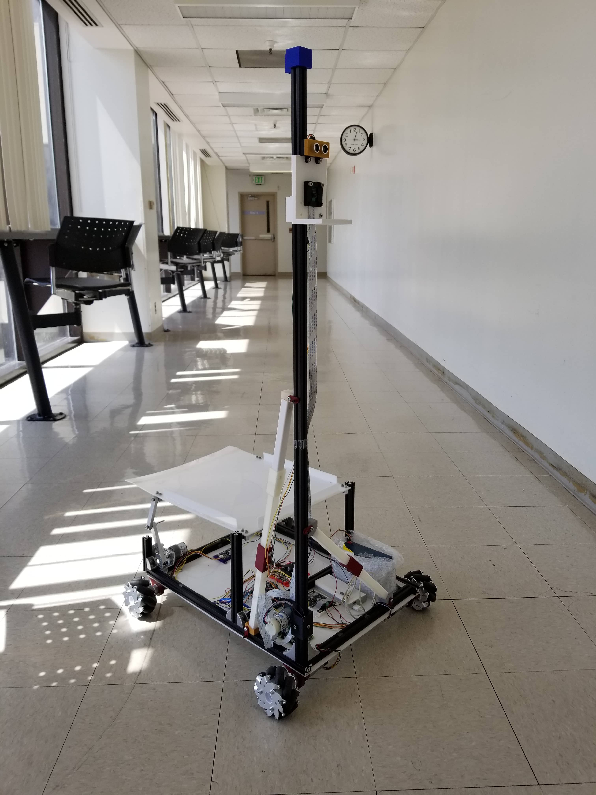
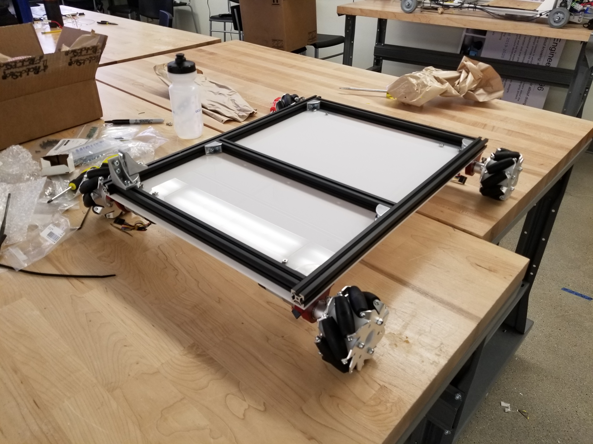
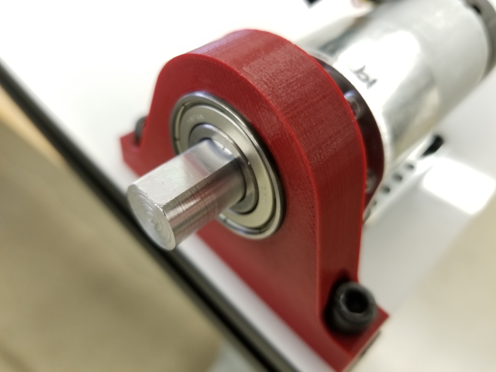
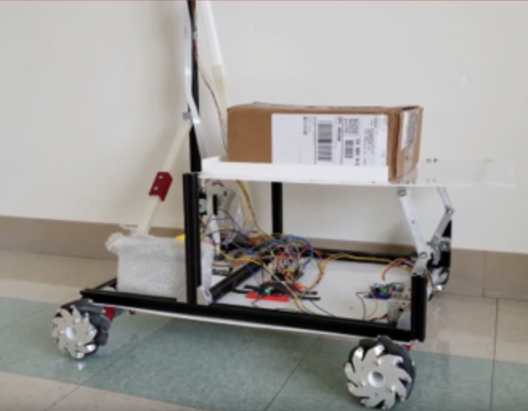
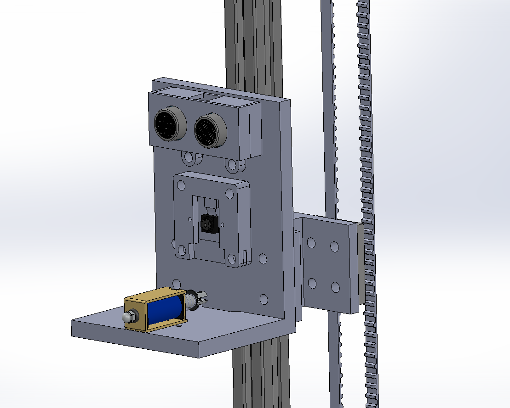
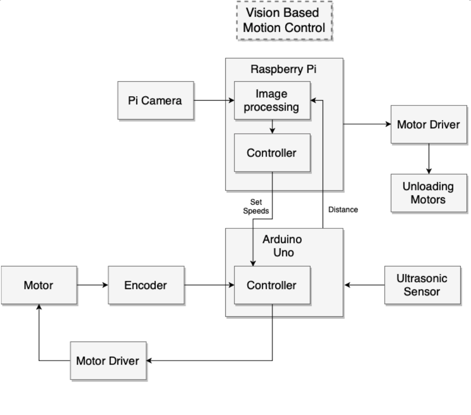
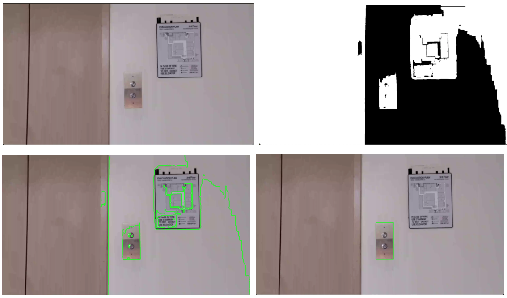

Elevator Delivery Robot

For my mechanical engineering senior design project, my group members and I developed an autonomous robot for making deliveries in multi-story buildings. Packages can be loaded onto the robot on the ground floor, and the robot will call the elevator, select the correct floor, exit the elevator on that floor and unload the packge to a designated area. We envision the robot being deployed in places such as apartment complexes and office buildings.
Given very few constraints on the subjec of our project, we came up with a list of possible issues that could be solved with an electromechanical device or robot. Some ideas included a dinner table setting robot, a dehydrator/compactor trash bin combo, and an anti-lock braking system for bicycles. We decided on our delivery robot as it gives us the chance to research and implement mechanical, electrical, and software design. We plan to use a combination of camera and ultrasonic sensor for vision and sensing, a solenoid attached to a belt system for button pressing, and a four-bar unloader, all mounted on a holonomic mecanum wheel chassis
As our team lead, I broke up the project into specific phases and tasks within those phases. I created a timeline for each task and assigned each to a team member. I was in charge of manufacturing our driving chassis, as well as writing our vision software and programming motor control and the robot's logic.
Chassis and Mechanisms


We decided on using a holonomic drive chassis because it would allow simpler movements when positioning of the robot inside of the elevator. The chassis is comprised of t-slot extrusion, an acryllic base plate and 3d printed bearing blocks as drive axle supports. We chose to use DC motors over stepper motors based off of speed and package weight requirements as well as cost constraints.


The four-bar unloading mechanism was designed to minimize the required motor torque and power to unload by lowering one end of the platform as opposed to lifting the other like a dump truck.
The pi camera and ultrasonic sensor are both mounted to to a vertical sled which can be moved by a belt pulley system. We originally designed for a solenoid to mount on the sled to push the elevator buttons but found that we could simply use the rigid sled to push the button instead.
Software and Control

At the high level, video feed is taken from the pi camera and processed in the raspberry pi. Once distance between the robot and desired target are found, the pi calculates the robot set speed and direction using PID control. This is sent to the Arduino which then calculates the individual wheel speeds and voltages to apply.
An Arduino is used for low-level control of the DC drive motors. The four dc drive motors each have quadrature encoders which give 1200 counts per output shaft rotation using X4 encoding. The encoder outputs are read within the main loop of the Arduino by checking for changes in pin state between loops. The main loop runs fast enough to catch all encoder signal changes within the design speed of the wheels (below 100rpm). The internal timer is used run a routine at 20hz which calculates and adjusts wheel voltages based on the current and set speeds. This routine uses discrete PID control on each wheel with control parameters tuned manually.
The Arduino runs a loop in real-time to ping for distance and accept serial input. When serial input is received, it parses it for commands. Commands include changing motor PID parameters, setting robot speed and direction, stopping the motors, and requesting distance. An interrupt service routine takes care of calculating wheel speeds and readjusting PWM signals sent to the driver boards.

Several libraries were used to program the vision and motion in the raspberry pi including GPIO, OpenCV, and Tesseract. GPIO was used to control the IO pins on the pi for the unloader mechanism. OpenCV was used for processing the pi camera video feed and Tesseract was used for number recognition. The vision system is capable of tracking the elevator buttons and panels with a frame rate of about 20fps. Button detection was calibrated to the elevators of our specific engineering building and used traditional techniques such as thresholding, hough transforms and optical flow tracking. Given more time, we would have liked to implement, train and test a neural network to increase robustness and to allow the system to work with many different elevator interfaces.